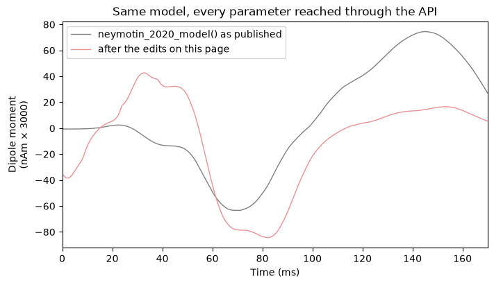
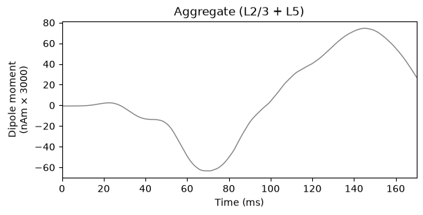
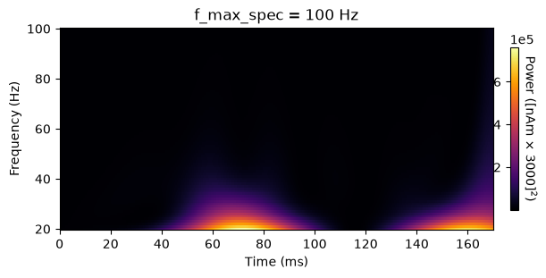

7.13 Changing Every Parameter Using the API
HNN began life with a single flat "parameter file": one dictionary
holding a couple hundred names like t_evprox_1,
gbar_L5Basket_L5Pyr_gabaa, or
L5Pyr_soma_gkbar_hh2. The canonical copy ships with
HNN-Core as hnn_core/param/default.json, and it is what you
get when you call neymotin_2020_model() with no arguments
at all.
We are in the process of retiring that file. Every value it holds is
ultimately poured into an ordinary Python object — the
Network — and once that object exists you can reach in and
change any of those values yourself. That is what we mean by "using the
API": no parameter file, no read_params(), no re-reading
from disk. Just attribute access and dictionary lookups on
net.
This page is the complete translation table. For every one of
the 212 keys in default.json it gives the
equivalent API edit, with runnable examples. The last section verifies
programmatically that not a single key was left out.
If you only want the one-line version, here it is. The legacy key
t_evprox_1 is the mean onset time of the drive that
eventually gets named evprox1, so instead of editing a file
you write:
net.external_drives["evprox1"]["dynamics"]["mu"] = 17.0Everything below is that same move, applied to the other 211 keys.
# Authors: Austin E. Soplata
import json
from copy import deepcopy
from functools import partial
from pathlib import Path
import matplotlib.pyplot as plt
import numpy as np
import hnn_core
from hnn_core import neymotin_2020_model, simulate_dipole
from hnn_core.network import pick_connection
Where each legacy key ends up
When you hand a parameter file to a network constructor,
hnn_core/params.py fans its flat keys out into five
destinations. Knowing which destination a key lands in is essentially
the whole trick.
| Destination | What lives there | Example key |
|---|---|---|
net._params |
the handful of simulation-wide values still read at build time | celsius |
net.cell_types[...]["cell_object"] |
morphology, ion channels and synapse kinetics of each cell template | L5Pyr_soma_gkbar_hh2 |
net.connectivity |
every synaptic weight and delay, both local and from drives | gbar_L2Pyr_L2Pyr_ampa |
net.external_drives |
when, how often, and how randomly each drive fires | t_evprox_1 |
| nowhere | consumed by simulate_dipole() or by post-processing, or
ignored entirely |
tstop, save_figs |
Two consequences are worth internalizing before we start.
- Synaptic weights do not live with the drive.
net.external_drives["evprox1"]carries a"weights_ampa"dictionary, but that is a bookkeeping copy — it is whatNetwork.write_configuration()records, and what a drive is rebuilt from. The value the simulator actually reads isnet.connectivity[idx]["nc_dict"]["A_weight"]. Keep both in sync; there is a helper below that does it for you. - Never hard-code a
net.connectivityindex. The list is built in whatever order drives and connections happened to be added, so the L5 → L5 AMPA connection that sits at index3in one script sits at index25in another. Always look connections up withpick_connection().
params_file = Path(hnn_core.__file__).parent / "param" / "default.json"
params = json.loads(params_file.read_text())
print(f"Reading: {params_file}")
print(f"{len(params)} keys, for example:")
for key in list(params)[:6]:
print(f" {key:<24} = {params[key]}")
Two small helpers
show() simply evaluates an expression and prints it, so
each example below reads as "here is the expression, here is what it
holds right now". set_drive_weight() and
set_drive_delay() write a drive's synaptic weight or delay
to both of the places it is stored, as discussed above.
def show(*exprs):
"""Evaluate expressions in the notebook namespace and print them."""
width = max(len(expr) for expr in exprs)
for expr in exprs:
print(f"{expr:<{width}} -> {eval(expr, globals())}")
def set_conn_weight(net, weight, **picks):
"""Set ``A_weight`` on every connection matching a ``pick_connection`` query."""
indices = pick_connection(net, **picks)
if not indices:
raise ValueError(f"no connection matched {picks}")
for idx in indices:
net.connectivity[idx]["nc_dict"]["A_weight"] = weight
return indices
def set_drive_weight(net, drive_name, cell_type, receptor, weight):
"""Set a drive's synaptic weight in both places HNN-Core stores it."""
indices = set_conn_weight(
net, weight, src_gids=drive_name, target_gids=cell_type, receptor=receptor
)
record = net.external_drives[drive_name].get(f"weights_{receptor}")
if isinstance(record, dict):
record[cell_type] = weight
return indices
def set_drive_delay(net, drive_name, cell_type, delay):
"""Set a drive's synaptic delay in both places HNN-Core stores it."""
indices = pick_connection(net, src_gids=drive_name, target_gids=cell_type)
if not indices:
raise ValueError(f"drive {drive_name!r} does not target {cell_type!r}")
for idx in indices:
net.connectivity[idx]["nc_dict"]["A_delay"] = delay
record = net.external_drives[drive_name].get("synaptic_delays")
if isinstance(record, dict):
record[cell_type] = delay
return indices
Building a network that exercises every key
default.json describes seven drives:
two rhythmic (bursty1, bursty2), one Poisson
(extpois), one Gaussian (extgauss), and three
evoked (evprox1, evdist1,
evprox2). Four of those seven are nulled
placeholders. The old GUI had no way to delete a drive, so unwanted
ones were disabled by giving them impossible values: all-zero synaptic
weights, a start time of 1000 ms inside a 170 ms simulation, a Poisson
stop time of -1. Modern HNN-Core simply drops such drives,
which is why the default network ends up with only the three evoked
ones.
So that every key has something concrete to point at, we build the
standard network and then add the four missing drives by hand, reading
their values straight out of params. Two of those values
cannot be used literally, and hnn_core/params.py patches
them in exactly the same way we do here:
- the Poisson stop time
T_pois = -1is clamped to0, and - the all-zero Poisson rate constants are forced to
1, because a rate constant has to be positive.
Because their weights are all zero, these four drives are inert: they are here as addressable targets for the parameter mapping, not as a suggestion that you should be simulating with them.
net = neymotin_2020_model(add_drives_from_params=True)
print(net)
print("\nDrives that survive from the param file:", list(net.external_drives))
# Short legacy cell names <-> the names HNN-Core uses today.
LONG_NAME = {
"L2Pyr": "L2_pyramidal",
"L2Basket": "L2_basket",
"L5Pyr": "L5_pyramidal",
"L5Basket": "L5_basket",
}
PROX_CELLS = ["L2Pyr", "L2Basket", "L5Pyr", "L5Basket"]
DIST_CELLS = ["L2Pyr", "L2Basket", "L5Pyr"] # legacy distal inputs skip L5 baskets
# --- rhythmic proximal drive, "bursty1" ---------------------------------------------
net.add_bursty_drive(
"bursty1",
location="proximal",
tstart=params["t0_input_prox"],
tstart_std=params["t0_input_stdev_prox"],
tstop=params["tstop_input_prox"],
burst_rate=params["f_input_prox"],
burst_std=params["f_stdev_prox"],
numspikes=params["events_per_cycle_prox"],
spike_isi=10, # never exposed in the param file; hard-coded in params.py
n_drive_cells=params["repeats_prox"],
cell_specific=False,
weights_ampa={
LONG_NAME[c]: params[f"input_prox_A_weight_{c}_ampa"] for c in PROX_CELLS
},
weights_nmda={
LONG_NAME[c]: params[f"input_prox_A_weight_{c}_nmda"] for c in PROX_CELLS
},
synaptic_delays={
LONG_NAME[c]: params[f"input_prox_A_delay_{c[:2]}"] for c in PROX_CELLS
},
space_constant=100.0, # also hard-coded in params.py, not in the file
event_seed=params["prng_seedcore_input_prox"],
)
# --- rhythmic distal drive, "bursty2" -----------------------------------------------
net.add_bursty_drive(
"bursty2",
location="distal",
tstart=params["t0_input_dist"],
tstart_std=params["t0_input_stdev_dist"],
tstop=params["tstop_input_dist"],
burst_rate=params["f_input_dist"],
burst_std=params["f_stdev_dist"],
numspikes=params["events_per_cycle_dist"],
spike_isi=10,
n_drive_cells=params["repeats_dist"],
cell_specific=False,
weights_ampa={
LONG_NAME[c]: params[f"input_dist_A_weight_{c}_ampa"] for c in DIST_CELLS
},
weights_nmda={
LONG_NAME[c]: params[f"input_dist_A_weight_{c}_nmda"] for c in DIST_CELLS
},
synaptic_delays={
LONG_NAME[c]: params[f"input_dist_A_delay_{c[:2]}"] for c in DIST_CELLS
},
space_constant=100.0,
event_seed=params["prng_seedcore_input_dist"],
)
# --- Poisson drive, "extpois" -------------------------------------------------------
net.add_poisson_drive(
"extpois",
location="proximal",
tstart=max(0.0, params["t0_pois"]),
tstop=max(0.0, params["T_pois"]), # T_pois is -1 in the file; params.py clamps it
rate_constant={
# a rate constant of 0 is illegal, and params.py substitutes 1
LONG_NAME[c]: params[f"{c}_Pois_lamtha"] or 1.0
for c in PROX_CELLS
},
weights_ampa={LONG_NAME[c]: params[f"{c}_Pois_A_weight_ampa"] for c in PROX_CELLS},
weights_nmda={LONG_NAME[c]: params[f"{c}_Pois_A_weight_nmda"] for c in PROX_CELLS},
synaptic_delays={
"L2_pyramidal": 0.1,
"L2_basket": 1.0,
"L5_pyramidal": 1.0,
"L5_basket": 1.0,
},
space_constant=100.0,
event_seed=params["prng_seedcore_extpois"],
)
# --- Gaussian drive, "extgauss" -----------------------------------------------------
# default.json carries no weights or timing for this drive at all, only its seed. The
# values below are the fallbacks that params_default.py would supply.
net.add_evoked_drive(
"extgauss",
location="proximal",
mu=2000.0,
sigma=3.6,
numspikes=50, # hard-coded in params.py, inherited from the old GUI
n_drive_cells=1,
cell_specific=False,
weights_ampa={LONG_NAME[c]: 0.0 for c in PROX_CELLS},
synaptic_delays={
"L2_pyramidal": 0.1,
"L2_basket": 1.0,
"L5_pyramidal": 1.0,
"L5_basket": 1.0,
},
space_constant=100.0,
event_seed=params["prng_seedcore_extgauss"],
)
print("All seven legacy drives are now present:", list(net.external_drives))
print(f"{len(net.connectivity)} entries in net.connectivity")
1. Simulation control
These five keys never reach the Network in any useful
sense; they are arguments to simulate_dipole(), or values
still read out of net._params at build time.
| Legacy key | API equivalent |
|---|---|
tstop |
simulate_dipole(net, tstop=...) |
dt |
simulate_dipole(net, dt=...) |
N_trials |
simulate_dipole(net, n_trials=...) |
celsius |
net._params["celsius"] = ... |
threshold |
net._params["threshold"],
net.threshold, and every
nc_dict["threshold"] |
tstop, dt and N_trials are the
easy ones: pass them to simulate_dipole() and the copies
sitting in net._params are ignored (n_trials
falls back to net._params["N_trials"]
only when you leave it as None).
celsius and threshold are the awkward ones,
and they are a large part of why the param file has not disappeared yet:
NetworkBuilder reads both out of the private
net._params dictionary when it constructs the NEURON model,
and there is no public setter. Writing to net._params
directly is the supported workaround for now.
threshold is stored in three places, and they
do different jobs:
net._params["threshold"]sets the spike-detection threshold on the source side, i.e. the membrane potential at which a cell is deemed to have fired;net.connectivity[idx]["nc_dict"]["threshold"]does the same on the target side of each individual connection;net.thresholdis only the default handed to connections you add later.
To change the threshold everywhere, set all three.
show("net._params['tstop']", "net._params['dt']", "net._params['N_trials']")
# The API equivalent of editing tstop / dt / N_trials is simply to pass them in:
# dpls = simulate_dipole(net, tstop=170.0, dt=0.025, n_trials=1)
# We will actually run this near the end of the page.
show("net._params['celsius']")
net._params["celsius"] = 36.0
show("net._params['celsius']")
show(
"net._params['threshold']",
"net.threshold",
"net.connectivity[0]['nc_dict']['threshold']",
)
new_threshold = -10.0
net._params["threshold"] = new_threshold # source side (spike detection)
net.threshold = new_threshold # default for future connections
for conn in net.connectivity: # target side, one per connection
conn["nc_dict"]["threshold"] = new_threshold
show(
"net._params['threshold']",
"net.threshold",
"net.connectivity[0]['nc_dict']['threshold']",
)
2. Network size
| Legacy key | API equivalent |
|---|---|
N_pyr_x |
neymotin_2020_model(mesh_shape=(N_pyr_x, N_pyr_y)) |
N_pyr_y |
neymotin_2020_model(mesh_shape=(N_pyr_x, N_pyr_y)) |
These two are construction-time only. The grid
dimensions determine how many cells exist, which determines every GID in
the network, which determines every entry in
net.connectivity. There is no meaningful way to change them
afterwards; net._N_pyr_x exists but writing to it would
only desynchronize the bookkeeping from the cells that were actually
created. Build a new Network instead.
What you can change after the fact is the physical spacing
of that grid, with net.set_cell_positions(). That is not a
legacy parameter, but it is the thing people usually mean when they
reach for N_pyr_x.
show("net._N_pyr_x", "net._N_pyr_y", "len(net.gid_ranges['L5_pyramidal'])")
# Construction-time only: a smaller grid means a different Network object.
net_small = neymotin_2020_model(mesh_shape=(3, 3))
print(net_small)
# What you *can* do post-hoc is respace the existing grid:
net_small.set_cell_positions(inplane_distance=2.0, layer_separation=1200.0)
print("\nfirst L5 pyramidal positions:", net_small.pos_dict["L5_pyramidal"][:3])
3. Pyramidal cell morphology
Every L2Pyr_* / L5Pyr_* key that names a
compartment and one of L, diam,
cm or Ra describes a Section of a
cell template. Templates live at
net.cell_types[<cell type>]["cell_object"],
and their sections at .sections[<name>].
Section.L, .diam, .cm and
.Ra are read-only properties, because changing a length
also has to update the section's 3-D end points. Use
Cell.modify_section(), which does both:
cell = net.cell_types["L2_pyramidal"]["cell_object"]
cell.modify_section("apical_trunk", L=59.5, diam=4.25, cm=0.6195, Ra=200.0)Two naming details:
- The legacy key strips the underscore out of the compartment name, so
L2Pyr_apicaltrunk_Lis theLof the section calledapical_trunk,L2Pyr_apicaloblique_diamis thediamofapical_oblique, and so on. L2Pyr_dend_cmandL2Pyr_dend_Raare not a section. They are a single value applied to every non-somatic section at once, so their API equivalent is a loop. (There is no*_dend_Lor*_dend_diam: length and diameter are always per-section.)
Basket cells have no morphology keys in the param file — their
geometry is hard-coded in hnn_core/cells_default.py. You
can still edit it the same way, via
net.cell_types["L2_basket"]["cell_object"].modify_section("soma", ...).
SECTION_OF = {
"soma": "soma",
"apicaltrunk": "apical_trunk",
"apical1": "apical_1",
"apical2": "apical_2",
"apicaltuft": "apical_tuft",
"apicaloblique": "apical_oblique",
"basal1": "basal_1",
"basal2": "basal_2",
"basal3": "basal_3",
}
PYR_CELLS = {"L2Pyr": "L2_pyramidal", "L5Pyr": "L5_pyramidal"}
l2_pyr = net.cell_types["L2_pyramidal"]["cell_object"]
l5_pyr = net.cell_types["L5_pyramidal"]["cell_object"]
print("L2_pyramidal sections:", list(l2_pyr.sections))
print("L5_pyramidal sections:", list(l5_pyr.sections))
print("\nrepr of a Section shows every geometric property at once:")
show("l2_pyr.sections['soma']", "l5_pyr.sections['apical_tuft']")
# L2Pyr_soma_L, L2Pyr_soma_diam, L2Pyr_soma_cm, L2Pyr_soma_Ra
show("l2_pyr.sections['soma']")
l2_pyr.modify_section("soma", L=24.0, diam=25.0, cm=0.65, Ra=210.0)
show("l2_pyr.sections['soma']")
# L2Pyr_apicaltrunk_L and L2Pyr_apicaltrunk_diam -> the 'apical_trunk' section
show("l2_pyr.sections['apical_trunk']")
l2_pyr.modify_section("apical_trunk", L=65.0, diam=4.5)
show("l2_pyr.sections['apical_trunk']")
# L5Pyr_apical2_L -> L5 pyramidal cells have an extra 'apical_2' section
show("l5_pyr.sections['apical_2']")
l5_pyr.modify_section("apical_2", L=700.0)
show("l5_pyr.sections['apical_2']")
# L5Pyr_dend_cm and L5Pyr_dend_Ra apply to *every* non-somatic section.
dendrites = [name for name in l5_pyr.sections if name != "soma"]
print("sections affected by L5Pyr_dend_*:", dendrites)
show("l5_pyr.sections['basal_2']")
for sec_name in dendrites:
l5_pyr.modify_section(sec_name, cm=0.9, Ra=210.0)
show("l5_pyr.sections['basal_2']", "l5_pyr.sections['apical_tuft']")
4. Synapse kinetics
The keys of the form
<cell>_<receptor>_<property>
— L2Pyr_ampa_tau1, L5Pyr_gabab_e, and the ten
others per cell type — describe the receiving synapse
mechanisms of a cell template. They live in a plain nested
dictionary:
net.cell_types["L5_pyramidal"]["cell_object"].synapses["gabab"]["tau1"] = 45.0e is the reversal potential in mV, tau1 and
tau2 the rise and decay time constants in ms. The four
receptors are ampa, nmda, gabaa
and gabab.
This is exactly how HNN-Core itself builds
law_2021_model() on top of the default model, so the
example below reproduces the real change from that paper: slowing GABA-B
on both pyramidal populations.
show("l5_pyr.synapses")
# L2Pyr_gabab_tau1 / L2Pyr_gabab_tau2 / L5Pyr_gabab_tau1 / L5Pyr_gabab_tau2
# (this is the Law et al. 2021 modification)
for cell_name in ("L2_pyramidal", "L5_pyramidal"):
synapses = net.cell_types[cell_name]["cell_object"].synapses
synapses["gabab"]["tau1"] = 45.0
synapses["gabab"]["tau2"] = 200.0
# L2Pyr_ampa_tau2 and L2Pyr_ampa_e, one at a time
l2_pyr.synapses["ampa"]["tau2"] = 6.0
l2_pyr.synapses["ampa"]["e"] = 0.0
show("l2_pyr.synapses['gabab']", "l5_pyr.synapses['gabab']", "l2_pyr.synapses['ampa']")
5. Ion channel mechanisms
The remaining L2Pyr_* / L5Pyr_* keys name a
NEURON density mechanism and one of its parameters. They sit one level
deeper than the synapses, under each section's mechs:
net.cell_types["L5_pyramidal"]["cell_object"].sections["soma"].mechs["hh2"]["gkbar_hh2"] = 0.06Reading the legacy name takes one lookup table, because the mechanism name is not part of the key:
| Parameter in the key | NEURON mechanism | Present on |
|---|---|---|
gkbar_hh2, gnabar_hh2,
gl_hh2, el_hh2 |
hh2 |
L2 and L5 pyramidal |
gbar_km |
km |
L2 and L5 pyramidal |
gbar_ca |
ca |
L5 pyramidal |
taur_cad |
cad |
L5 pyramidal |
gbar_kca |
kca |
L5 pyramidal |
gbar_cat |
cat |
L5 pyramidal |
gbar_ar |
ar |
L5 pyramidal |
And, just as with cm and Ra, the
_soma_ form addresses one section while the
_dend_ form is a single value stamped onto every
dendritic section — so the API equivalent of a _dend_ key
is always a loop.
MECH_OF = {
"gkbar_hh2": "hh2",
"gnabar_hh2": "hh2",
"gl_hh2": "hh2",
"el_hh2": "hh2",
"gbar_km": "km",
"gbar_ca": "ca",
"taur_cad": "cad",
"gbar_kca": "kca",
"gbar_cat": "cat",
"gbar_ar": "ar",
}
show("l2_pyr.sections['soma'].mechs", "l5_pyr.sections['soma'].mechs")
# L5Pyr_soma_gkbar_hh2 and L5Pyr_soma_gnabar_hh2
show("l5_pyr.sections['soma'].mechs['hh2']")
l5_pyr.sections["soma"].mechs["hh2"]["gkbar_hh2"] = 0.012
l5_pyr.sections["soma"].mechs["hh2"]["gnabar_hh2"] = 0.17
show("l5_pyr.sections['soma'].mechs['hh2']")
# L2Pyr_soma_gbar_km, L2Pyr_soma_el_hh2, L5Pyr_soma_taur_cad, L5Pyr_soma_gbar_kca ...
l2_pyr.sections["soma"].mechs["km"]["gbar_km"] = 260.0
l2_pyr.sections["soma"].mechs["hh2"]["el_hh2"] = -64.0
l5_pyr.sections["soma"].mechs["cad"]["taur_cad"] = 22.0
l5_pyr.sections["soma"].mechs["kca"]["gbar_kca"] = 0.00025
show("l2_pyr.sections['soma'].mechs['km']", "l5_pyr.sections['soma'].mechs['cad']")
# L5Pyr_dend_gbar_km: one legacy value, eight dendritic sections.
l5_dendrites = [name for name in l5_pyr.sections if name != "soma"]
show("l5_pyr.sections['apical_1'].mechs['km']")
for sec_name in l5_dendrites:
l5_pyr.sections[sec_name].mechs["km"]["gbar_km"] = 220.0
show(
"l5_pyr.sections['apical_1'].mechs['km']",
"l5_pyr.sections['basal_3'].mechs['km']",
"l5_pyr.sections['soma'].mechs['km']",
)
The one exception: L5Pyr_dend_gbar_ar
gbar_ar on L5 pyramidal dendrites is the single case
where the legacy value is not actually used.
hnn_core/cells_default.py overwrites it with a
function of distance from the soma,
gbar_ar(x) = gbar_at_zero * exp(0.003 * x)and Cell._compute_section_mechs() then evaluates that
function once per NEURON segment, replacing it with a
[segment_positions, segment_values] pair. So after the
network is built,
mechs["ar"]["gbar_ar"]
is a list, not a number — which tells you at a glance that this channel
is distributed rather than uniform.
You can therefore set it in two ways:
- assign a plain float, and the conductance becomes uniform across that section; or
- assign a callable taking distance-from-soma in µm, then call
_compute_section_mechs()to re-evaluate it per segment. This is the form the model actually ships with.
The same machinery is what calcium_model() uses to give
L5 pyramidal cells their distance-dependent calcium conductance.
show("l5_pyr.sections['soma'].mechs['ar']")
print()
print("a dendritic gbar_ar is a [positions, values] pair, not a scalar:")
positions, values = l5_pyr.sections["apical_1"].mechs["ar"]["gbar_ar"]
print(f" {len(positions)} segments, gbar from {values[0]:.3e} to {values[-1]:.3e}")
def exp_gbar(x, gbar_at_zero, exp_term=3e-3, offset=0.0):
"""Conductance as a function of distance-from-soma, in microns."""
return gbar_at_zero * (np.exp(exp_term * x) + offset)
# L5Pyr_soma_gbar_ar: the soma really is a single number.
l5_pyr.sections["soma"].mechs["ar"]["gbar_ar"] = 2e-06
# L5Pyr_dend_gbar_ar: replace the distance function, then re-evaluate it.
for sec_name in l5_dendrites:
l5_pyr.sections[sec_name].mechs["ar"]["gbar_ar"] = partial(exp_gbar, gbar_at_zero=2e-06)
l5_pyr._compute_section_mechs()
positions, values = l5_pyr.sections["apical_1"].mechs["ar"]["gbar_ar"]
print(f"apical_1 gbar_ar now runs {values[0]:.3e} -> {values[-1]:.3e}")
show("l5_pyr.sections['soma'].mechs['ar']")
6. Local network connectivity
The fifteen
gbar_<source>_<target>[_<receptor>]
keys are the synaptic weights of the cortical column itself. Every one
of them becomes an A_weight inside
net.connectivity, and the way to find the right entry is
pick_connection(), which takes any combination of source,
target, location and receptor and returns a list of indices.
for idx in pick_connection(net, src_gids="L5_pyramidal", target_gids="L5_pyramidal",
loc="proximal", receptor="ampa"):
net.connectivity[idx]["nc_dict"]["A_weight"] = 0.0007Each nc_dict also holds A_delay (ms),
lamtha (the space constant, in units of the grid's in-plane
distance), threshold and gain. Only
A_weight has a legacy key here: the delays and space
constants of local connections are hard-coded in
hnn_core/network_models.py, never read from the param
file.
One key maps to two connections.
gbar_L2Pyr_L5Pyr is used for both the proximal and the
distal L2 → L5 pyramidal projections, so the query below deliberately
leaves loc unspecified and updates both.
LOCAL_CONNS = {
"gbar_L2Pyr_L2Pyr_ampa": dict(src_gids="L2_pyramidal", target_gids="L2_pyramidal",
loc="proximal", receptor="ampa"),
"gbar_L2Pyr_L2Pyr_nmda": dict(src_gids="L2_pyramidal", target_gids="L2_pyramidal",
loc="proximal", receptor="nmda"),
"gbar_L5Pyr_L5Pyr_ampa": dict(src_gids="L5_pyramidal", target_gids="L5_pyramidal",
loc="proximal", receptor="ampa"),
"gbar_L5Pyr_L5Pyr_nmda": dict(src_gids="L5_pyramidal", target_gids="L5_pyramidal",
loc="proximal", receptor="nmda"),
"gbar_L2Basket_L2Pyr_gabaa": dict(src_gids="L2_basket", target_gids="L2_pyramidal",
loc="soma", receptor="gabaa"),
"gbar_L2Basket_L2Pyr_gabab": dict(src_gids="L2_basket", target_gids="L2_pyramidal",
loc="soma", receptor="gabab"),
"gbar_L5Basket_L5Pyr_gabaa": dict(src_gids="L5_basket", target_gids="L5_pyramidal",
loc="soma", receptor="gabaa"),
"gbar_L5Basket_L5Pyr_gabab": dict(src_gids="L5_basket", target_gids="L5_pyramidal",
loc="soma", receptor="gabab"),
# one key, two connections (proximal and distal)
"gbar_L2Pyr_L5Pyr": dict(src_gids="L2_pyramidal", target_gids="L5_pyramidal",
receptor="ampa"),
"gbar_L2Basket_L5Pyr": dict(src_gids="L2_basket", target_gids="L5_pyramidal",
loc="distal", receptor="gabaa"),
"gbar_L2Pyr_L2Basket": dict(src_gids="L2_pyramidal", target_gids="L2_basket",
loc="soma", receptor="ampa"),
"gbar_L2Basket_L2Basket": dict(src_gids="L2_basket", target_gids="L2_basket",
loc="soma", receptor="gabaa"),
"gbar_L2Pyr_L5Basket": dict(src_gids="L2_pyramidal", target_gids="L5_basket",
loc="soma", receptor="ampa"),
"gbar_L5Pyr_L5Basket": dict(src_gids="L5_pyramidal", target_gids="L5_basket",
loc="soma", receptor="ampa"),
"gbar_L5Basket_L5Basket": dict(src_gids="L5_basket", target_gids="L5_basket",
loc="soma", receptor="gabaa"),
}
print(f"{'legacy key':<28} {'default.json':>12} connectivity indices / current weights")
for key, query in LOCAL_CONNS.items():
indices = pick_connection(net, **query)
weights = [net.connectivity[i]["nc_dict"]["A_weight"] for i in indices]
print(f"{key:<28} {params[key]:>12} {indices} -> {weights}")
# gbar_L5Pyr_L5Pyr_ampa: strengthen recurrent L5 excitation.
set_conn_weight(net, 0.0007, **LOCAL_CONNS["gbar_L5Pyr_L5Pyr_ampa"])
# gbar_L2Basket_L2Pyr_gabaa: strengthen L2 feedback inhibition.
set_conn_weight(net, 0.06, **LOCAL_CONNS["gbar_L2Basket_L2Pyr_gabaa"])
# gbar_L2Pyr_L5Pyr: one key, so both the proximal and the distal projection change.
indices = set_conn_weight(net, 0.0004, **LOCAL_CONNS["gbar_L2Pyr_L5Pyr"])
print("gbar_L2Pyr_L5Pyr updated connections:", indices)
for key in ("gbar_L5Pyr_L5Pyr_ampa", "gbar_L2Basket_L2Pyr_gabaa", "gbar_L2Pyr_L5Pyr"):
idxs = pick_connection(net, **LOCAL_CONNS[key])
print(f"{key:<28} {[net.connectivity[i]['nc_dict']['A_weight'] for i in idxs]}")
7. Evoked drives
Now the part most people actually came for. Each of
evprox1, evdist1 and evprox2 gets
its timing from three legacy keys and its strength from six or eight
more.
| Legacy key | API equivalent |
|---|---|
t_evprox_1 |
net.external_drives["evprox1"]["dynamics"]["mu"] |
sigma_t_evprox_1 |
net.external_drives["evprox1"]["dynamics"]["sigma"] |
numspikes_evprox_1 |
net.external_drives["evprox1"]["dynamics"]["numspikes"] |
gbar_evprox_1_L2Pyr_ampa |
A_weight of
pick_connection(net, src_gids="evprox1", target_gids="L2_pyramidal", receptor="ampa") |
The name mapping is mechanical: evprox_1 in a key
becomes the drive named evprox1, evdist_1
becomes evdist1, and so on. mu and
sigma are the mean and standard deviation (both in ms) of
the Gaussian from which each drive cell's spike time is drawn;
numspikes is how many spikes each drive cell
contributes.
Note that evdist1 has no L5Basket weight
keys — the legacy distal evoked input does not target L5 basket cells —
and that the synaptic delays of evoked drives (0.1 ms for L2,
1.0 ms for L5 proximal) are hard-coded in params.py rather
than stored in the file.
show(
"net.external_drives['evprox1']['dynamics']",
"net.external_drives['evdist1']['dynamics']",
"net.external_drives['evprox2']['dynamics']",
)
# t_evprox_1, sigma_t_evprox_1, numspikes_evprox_1
show("net.external_drives['evprox1']['dynamics']")
net.external_drives["evprox1"]["dynamics"]["mu"] = 17.0
net.external_drives["evprox1"]["dynamics"]["sigma"] = 3.0
net.external_drives["evprox1"]["dynamics"]["numspikes"] = 1
show("net.external_drives['evprox1']['dynamics']")
# t_evdist_1 and t_evprox_2, for good measure
net.external_drives["evdist1"]["dynamics"]["mu"] = 60.0
net.external_drives["evprox2"]["dynamics"]["mu"] = 135.0
show(
"net.external_drives['evdist1']['dynamics']['mu']",
"net.external_drives['evprox2']['dynamics']['mu']",
)
# gbar_evprox_1__: the weights live in net.connectivity.
print("evprox1 weights, as the simulator sees them:")
for short, long in LONG_NAME.items():
for receptor in ("ampa", "nmda"):
key = f"gbar_evprox_1_{short}_{receptor}"
indices = pick_connection(net, src_gids="evprox1", target_gids=long,
receptor=receptor)
weights = [net.connectivity[i]["nc_dict"]["A_weight"] for i in indices]
print(f" {key:<32} {params[key]:>10} -> idx {indices} = {weights}")
|
# Change one weight. set_drive_weight() writes it to net.connectivity *and* to the
# bookkeeping copy in net.external_drives.
set_drive_weight(net, "evprox1", "L2_pyramidal", "ampa", 0.02)
set_drive_weight(net, "evprox2", "L5_pyramidal", "ampa", 0.75)
set_drive_weight(net, "evdist1", "L5_pyramidal", "nmda", 0.09)
idx = pick_connection(net, src_gids="evprox1", target_gids="L2_pyramidal",
receptor="ampa")[0]
show(
"net.connectivity[idx]['nc_dict']['A_weight']",
"net.external_drives['evprox1']['weights_ampa']['L2_pyramidal']",
)
8. Rhythmic (bursty) drives
The *_prox and *_dist families describe the
two rhythmic drives, which HNN-Core names bursty1
(proximal) and bursty2 (distal). Everything about
when they fire is in dynamics; everything about
how strongly they connect is in
net.connectivity.
Legacy key (prox shown) |
API equivalent |
|---|---|
t0_input_prox |
net.external_drives["bursty1"]["dynamics"]["tstart"] |
t0_input_stdev_prox |
net.external_drives["bursty1"]["dynamics"]["tstart_std"] |
tstop_input_prox |
net.external_drives["bursty1"]["dynamics"]["tstop"] |
f_input_prox |
net.external_drives["bursty1"]["dynamics"]["burst_rate"] |
f_stdev_prox |
net.external_drives["bursty1"]["dynamics"]["burst_std"] |
events_per_cycle_prox |
net.external_drives["bursty1"]["dynamics"]["numspikes"] |
repeats_prox |
net.external_drives["bursty1"]["n_drive_cells"]
— structural, see section 12 |
input_prox_A_weight_L2Pyr_ampa |
A_weight of
pick_connection(net, src_gids="bursty1", target_gids="L2_pyramidal", receptor="ampa") |
input_prox_A_delay_L2 |
A_delay of every bursty1 connection onto
an L2 cell type |
Some of the renaming is not obvious, so it is worth spelling out:
f_input_proxis a rate (Hz), not a time — henceburst_rate.f_stdev_proxis despite its name a time jitter in ms applied to each burst, henceburst_std.events_per_cycle_proxis the number of spikes within one burst, hencenumspikes. The interval between those spikes (spike_isi, 10 ms) was never in the param file.input_prox_A_delay_L2is a single value covering both L2 cell types, andinput_prox_A_delay_L5covers both L5 ones, so each one maps to a small loop.
show(
"net.external_drives['bursty1']['dynamics']",
"net.external_drives['bursty2']['dynamics']",
"net.external_drives['bursty1']['n_drive_cells']",
)
# t0_input_prox, tstop_input_prox, f_input_prox, f_stdev_prox,
# t0_input_stdev_prox, events_per_cycle_prox
dynamics = net.external_drives["bursty1"]["dynamics"]
dynamics["tstart"] = 50.0
dynamics["tstart_std"] = 5.0
dynamics["tstop"] = 170.0
dynamics["burst_rate"] = 12.0
dynamics["burst_std"] = 15.0
dynamics["numspikes"] = 2
# ... and the distal equivalents
net.external_drives["bursty2"]["dynamics"]["tstart"] = 50.0
net.external_drives["bursty2"]["dynamics"]["burst_rate"] = 10.0
show(
"net.external_drives['bursty1']['dynamics']",
"net.external_drives['bursty2']['dynamics']",
)
# input_prox_A_weight__ and input_prox_A_delay_L2 / _L5
set_drive_weight(net, "bursty1", "L5_pyramidal", "ampa", 4e-05)
set_drive_weight(net, "bursty1", "L2_pyramidal", "ampa", 4e-05)
# A delay key covers a whole layer, so loop over that layer's cell types.
for cell_type in ("L5_pyramidal", "L5_basket"): # input_prox_A_delay_L5
set_drive_delay(net, "bursty1", cell_type, 1.0)
for cell_type in ("L2_pyramidal", "L2_basket"): # input_prox_A_delay_L2
set_drive_delay(net, "bursty1", cell_type, 0.1)
idx = pick_connection(net, src_gids="bursty1", target_gids="L5_pyramidal",
receptor="ampa")[0]
show(
"net.connectivity[idx]['nc_dict']",
"net.external_drives['bursty1']['weights_ampa']",
"net.external_drives['bursty1']['synaptic_delays']",
)
|
9. The Poisson drive
extpois is the one drive whose rate is per cell
type, so L2Pyr_Pois_lamtha and its three siblings end
up inside a nested dictionary rather than as a single number.
| Legacy key | API equivalent |
|---|---|
t0_pois |
net.external_drives["extpois"]["dynamics"]["tstart"] |
T_pois |
net.external_drives["extpois"]["dynamics"]["tstop"] |
L2Pyr_Pois_lamtha |
net.external_drives["extpois"]["dynamics"]["rate_constant"]["L2_pyramidal"] |
L2Pyr_Pois_A_weight_ampa |
A_weight of
pick_connection(net, src_gids="extpois", target_gids="L2_pyramidal", receptor="ampa") |
lamtha here is the Poisson rate
constant in Hz — not to be confused with the
lamtha inside an nc_dict, which is the spatial
decay constant of connection weights. Legacy files unfortunately use the
same word for both.
show("net.external_drives['extpois']['dynamics']")
# t0_pois and T_pois
net.external_drives["extpois"]["dynamics"]["tstart"] = 0.0
net.external_drives["extpois"]["dynamics"]["tstop"] = 170.0
# _Pois_lamtha: one rate constant per targeted cell type
rate_constant = net.external_drives["extpois"]["dynamics"]["rate_constant"]
rate_constant["L2_pyramidal"] = 10.0
rate_constant["L2_basket"] = 10.0
rate_constant["L5_pyramidal"] = 8.0
rate_constant["L5_basket"] = 8.0
# _Pois_A_weight_
set_drive_weight(net, "extpois", "L5_pyramidal", "ampa", 2e-05)
set_drive_weight(net, "extpois", "L5_pyramidal", "nmda", 1e-05)
show(
"net.external_drives['extpois']['dynamics']",
"net.external_drives['extpois']['weights_ampa']",
)
| |
10. The Gaussian drive
extgauss is the thinnest case of all:
default.json contains exactly one key for
it, prng_seedcore_extgauss. Its weights and timing live in
params_default.py and only appear in a param file if you
write them there yourself.
In HNN-Core a Gaussian drive is just an evoked drive under another
name — params.py builds it with
add_evoked_drive() — so its dynamics are the
familiar mu, sigma and numspikes,
and its weights are ordinary nc_dict entries.
show(
"net.external_drives['extgauss']['type']",
"net.external_drives['extgauss']['dynamics']",
)
net.external_drives["extgauss"]["dynamics"]["mu"] = 100.0
net.external_drives["extgauss"]["dynamics"]["sigma"] = 5.0
set_drive_weight(net, "extgauss", "L2_pyramidal", "ampa", 1e-05)
show(
"net.external_drives['extgauss']['dynamics']",
"net.external_drives['extgauss']['weights_ampa']",
)
11. Random-number seeds
All eight prng_seedcore_* keys become the
event_seed of one drive. That seed is what determines the
spike times a drive produces; each of its artificial cells gets
event_seed + gid, and the whole thing is incremented on
every trial so repeated trials are not identical.
| Legacy key | Drive |
|---|---|
prng_seedcore_input_prox |
bursty1 |
prng_seedcore_input_dist |
bursty2 |
prng_seedcore_extpois |
extpois |
prng_seedcore_extgauss |
extgauss |
prng_seedcore_evprox_1 |
evprox1 |
prng_seedcore_evdist_1 |
evdist1 |
prng_seedcore_evprox_2 |
evprox2 |
prng_seedcore_evdist_2 |
evdist2 — a drive that does not exist |
That last row is a genuine artifact. default.json
carries a seed for a second distal evoked drive, but no
t_evdist_2, and params.py counts evoked drives
by looking for t_* keys — so evdist2 is never
created and its seed is never read. If you want that drive, add it with
net.add_evoked_drive("evdist2", ...) and
pass event_seed there.
One wrinkle shows up in the output below. When drives are built
from a param file, hnn_core/drives.py offsets each
drive's seed by that drive's first GID, so that several drives sharing a
seed of 2 do not all draw the same random sequence. That is
why evprox1 below reports something like 507
rather than the 2 written in the file, while the drives we
added by hand report exactly the event_seed we passed. Once
the network exists, the number you assign is the number that gets
used.
There is also a second seed per drive, conn_seed, which
decides which connections get dropped when
probability < 1.0. It has no legacy key at all,
since the old parameter format had no notion of probabilistic
connectivity.
SEED_TO_DRIVE = {
"prng_seedcore_input_prox": "bursty1",
"prng_seedcore_input_dist": "bursty2",
"prng_seedcore_extpois": "extpois",
"prng_seedcore_extgauss": "extgauss",
"prng_seedcore_evprox_1": "evprox1",
"prng_seedcore_evdist_1": "evdist1",
"prng_seedcore_evprox_2": "evprox2",
"prng_seedcore_evdist_2": "evdist2",
}
for key, drive_name in SEED_TO_DRIVE.items():
drive = net.external_drives.get(drive_name)
current = drive["event_seed"] if drive else "(drive does not exist)"
print(f"{key:<28} file={params[key]:<4} net.external_drives[{drive_name!r}] -> {current}")
# Changing a seed is a plain assignment.
for drive_name in net.external_drives:
net.external_drives[drive_name]["event_seed"] = 4
show("{name: d['event_seed'] for name, d in net.external_drives.items()}")
# conn_seed has no legacy equivalent, but is set the same way.
net.external_drives["evprox1"]["conn_seed"] = 5
show("net.external_drives['evprox1']['conn_seed']")
12. Structural parameters, and how to change them anyway
Four legacy keys are not really values at all — they decide how many objects exist:
| Legacy key | What it decides |
|---|---|
N_pyr_x, N_pyr_y |
how many cells the network contains |
repeats_prox, repeats_dist |
how many artificial cells a rhythmic drive contains |
sync_evinput |
whether an evoked drive has one cell per target cell, or a single shared cell |
n_drive_cells is baked into net.gid_ranges
when a drive is attached, so assigning to
net.external_drives["bursty1"]["n_drive_cells"]
afterwards changes the bookkeeping without creating any cells. The drive
has to be rebuilt.
HNN-Core gives you net.clear_drives(), which removes
all drives at once, so the recipe is: snapshot every drive,
clear, and re-add them with whatever you want changed. The helper below
does exactly that, and is a useful thing to keep around. Note that it
rebuilds each drive from
external_drives[...]["weights_ampa"] and
["synaptic_delays"] — the bookkeeping
copies — which is precisely why set_drive_weight() keeps
them in sync with net.connectivity.
sync_evinput is the same operation: in a legacy file,
sync_evinput: true means "give this evoked drive a single
artificial cell that every target shares", which today is
n_drive_cells=1, cell_specific=False.
DRIVE_ADDER = {
"evoked": "add_evoked_drive",
"gaussian": "add_evoked_drive",
"bursty": "add_bursty_drive",
"poisson": "add_poisson_drive",
}
def rebuild_drives(net, overrides=None):
"""Re-create every drive on ``net``, applying per-drive keyword overrides.
Use this for the structural drive parameters -- ``n_drive_cells`` and
``cell_specific`` -- which cannot be changed in place.
"""
overrides = overrides or {}
specs = deepcopy(net.external_drives)
# the space constant is only stored on the connections, so read it back out
space_constants = {
name: net.connectivity[pick_connection(net, src_gids=name)[0]]["nc_dict"]["lamtha"]
for name in specs
}
net.clear_drives()
for name, spec in specs.items():
kwargs = dict(
location=spec["location"],
weights_ampa=spec["weights_ampa"],
weights_nmda=spec["weights_nmda"],
synaptic_delays=spec["synaptic_delays"],
space_constant=space_constants[name],
probability=spec["probability"],
event_seed=spec["event_seed"],
conn_seed=spec["conn_seed"],
cell_specific=spec["cell_specific"],
n_drive_cells=("n_cells" if spec["cell_specific"] else spec["n_drive_cells"]),
**spec["dynamics"],
)
kwargs.update(overrides.get(name, {}))
getattr(net, DRIVE_ADDER[spec["type"]])(name, **kwargs)
return net
# repeats_prox / repeats_dist
show(
"net.external_drives['bursty1']['n_drive_cells']",
"len(net.gid_ranges['bursty1'])",
)
rebuild_drives(net, overrides={"bursty1": dict(n_drive_cells=20)})
show(
"net.external_drives['bursty1']['n_drive_cells']",
"len(net.gid_ranges['bursty1'])",
)
# the weights we set earlier survived the rebuild, because we kept both copies in sync
idx = pick_connection(net, src_gids="bursty1", target_gids="L5_pyramidal",
receptor="ampa")[0]
show("net.connectivity[idx]['nc_dict']['A_weight']")
# sync_evinput: true == n_drive_cells=1, cell_specific=False
net_sync = net.copy()
show(
"net_sync.external_drives['evprox1']['cell_specific']",
"net_sync.external_drives['evprox1']['n_drive_cells']",
)
rebuild_drives(
net_sync,
overrides={
name: dict(n_drive_cells=1, cell_specific=False)
for name in ("evprox1", "evdist1", "evprox2")
},
)
show(
"net_sync.external_drives['evprox1']['cell_specific']",
"net_sync.external_drives['evprox1']['n_drive_cells']",
"len(net_sync.gid_ranges['evprox1'])",
)
13. Keys that HNN-Core no longer reads
Six keys survive in default.json purely as archaeology.
HNN-Core never looks at them, and nothing in the Network
corresponds to them; they were instructions to the old GUI's own
bookkeeping.
| Legacy key | Modern equivalent |
|---|---|
save_dpl |
dpl.write("dipole.txt") — you decide
what to save, and when |
save_figs |
fig.savefig("figure.png") |
save_spec_data |
HNN-Core stores no spectrogram; compute and save one yourself |
f_max_spec |
the freqs argument of
Dipole.plot_tfr_morlet() |
save_vsoma |
simulate_dipole(net, record_vsec="soma") |
inc_evinput |
write the trial loop yourself |
inc_evinput is the interesting one. In the old GUI it
meant "shift every evoked input by this many ms on each successive
trial". There is no switch for that today, because you no longer need
one — you own the trial loop, so you can do it (or anything else) by
hand:
dpls = []
for trial in range(n_trials):
for drive_name in ("evprox1", "evdist1", "evprox2"):
net.external_drives[drive_name]["dynamics"]["mu"] += inc_evinput
dpls += simulate_dipole(net, tstop=170.0, n_trials=1)Everything else in that table is covered by the post-processing section below, once we have an actual dipole to work with.
14. Does it still run?
Every edit above was made in place on a single Network,
so net is now a fairly thoroughly mutated version of the
published model. The point of simulating it is not the waveform — it is
that a network assembled entirely through the API is an ordinary network
that simulate_dipole() accepts without complaint.
We simulate a pristine neymotin_2020_model() alongside
it for comparison. The difference between the two traces is the
accumulated effect of roughly thirty arbitrary example edits, and is
not a parameter set anyone should copy.
net_reference = neymotin_2020_model(add_drives_from_params=True)
dpls_reference = simulate_dipole(net_reference, tstop=170.0, dt=0.025, n_trials=1)
dpls_modified = simulate_dipole(net, tstop=170.0, dt=0.025, n_trials=1)
fig, ax = plt.subplots(figsize=(7, 4), constrained_layout=True)
dpls_reference[0].copy().smooth(30).scale(3000).plot(ax=ax, show=False, color="k")
dpls_modified[0].copy().smooth(30).scale(3000).plot(ax=ax, show=False, color="tab:red")
ax.legend(["neymotin_2020_model() as published", "after the edits on this page"])
ax.set_title("Same model, every parameter reached through the API")
plt.show()

15. Output and post-processing
With a dipole in hand, the last handful of legacy keys become one-liners.
| Legacy key | API equivalent |
|---|---|
dipole_smooth_win |
dpl.smooth(30) |
dipole_scalefctr |
dpl.scale(3000) |
save_dpl |
dpl.write("dipole.txt") |
save_figs |
fig.savefig("figure.png") |
f_max_spec |
dpl.plot_tfr_morlet(freqs=np.arange(1.0, f_max_spec + 1.0)) |
save_spec_data |
no HNN-Core equivalent; compute and save the spectrogram yourself |
save_vsoma |
simulate_dipole(net, record_vsec="soma") |
smooth() and scale() modify the
Dipole in place and return it, so they chain. The legacy
behaviour — smoothing and scaling automatically, using the values in the
param file — is still reachable as
simulate_dipole(net, postproc=True), which reads
net._params["dipole_smooth_win"] and
net._params["dipole_scalefctr"]. Prefer
the explicit methods: they make it obvious in the script what was done
to the data.
dpl = dpls_reference[0].copy()
print("raw peak:", f"{np.abs(dpl.data['agg']).max():.4f} nAm")
# dipole_smooth_win and dipole_scalefctr
dpl.smooth(params["dipole_smooth_win"]).scale(params["dipole_scalefctr"])
print("after smooth(%g).scale(%g):" % (params["dipole_smooth_win"], params["dipole_scalefctr"]),
f"{np.abs(dpl.data['agg']).max():.4f} nAm")
import tempfile
output_dir = Path(tempfile.mkdtemp())
# save_dpl
dipole_path = output_dir / "dipole.txt"
dpl.write(dipole_path)
print("save_dpl ->", dipole_path, f"({dipole_path.stat().st_size} bytes)")
# save_figs
fig, ax = plt.subplots(figsize=(6, 3), constrained_layout=True)
dpl.plot(ax=ax, show=False)
figure_path = output_dir / "dipole.png"
fig.savefig(figure_path, dpi=100)
print("save_figs ->", figure_path, f"({figure_path.stat().st_size} bytes)")
plt.show()

# f_max_spec: an upper frequency bound is now just the top of the `freqs` array you ask
# for. (A 170 ms simulation cannot support many cycles at low frequencies, so we start
# at 20 Hz and use a short wavelet here.)
f_max_spec = params["f_max_spec"]
freqs = np.arange(20.0, f_max_spec + 1.0)
fig, ax = plt.subplots(figsize=(6, 3), constrained_layout=True)
dpl.plot_tfr_morlet(freqs=freqs, n_cycles=3.0, ax=ax, show=False)
ax.set_title(f"f_max_spec = {f_max_spec} Hz")
plt.show()
# save_spec_data: HNN-Core keeps no spectrogram of its own, so if you want the numbers
# rather than the picture, compute them yourself and save them, e.g. with np.savez().

# save_vsoma -> record_vsec="soma". Done on a small, short network to keep it quick.
net_tiny = neymotin_2020_model(add_drives_from_params=True, mesh_shape=(3, 3))
_ = simulate_dipole(net_tiny, tstop=40.0, n_trials=1, record_vsec="soma")
vsec = net_tiny.cell_response.vsec[0] # trial 0: {gid: {section: [voltages]}}
example_gid = net_tiny.gid_ranges["L5_pyramidal"][0]
trace = np.asarray(vsec[example_gid]["soma"])
print(f"recorded {len(vsec)} cells; gid {example_gid} "
f"({net_tiny.gid_to_type(example_gid)}) has sections {list(vsec[example_gid])}")
print(f"somatic V over {len(trace)} samples: "
f"{trace.min():.2f} mV to {trace.max():.2f} mV")
16. The complete table
Everything above, assembled into one dictionary — one entry for each
key in default.json. Most of it is built with loops,
because most of the legacy names are themselves generated by
pattern.
VALUE below stands for whatever you want to set. Where
an entry describes a loop rather than a single assignment, it says
so.
API_MAP = {}
# --- 1. simulation control ------------------------------------------------------------
API_MAP.update({
"tstop": "simulate_dipole(net, tstop=VALUE)",
"dt": "simulate_dipole(net, dt=VALUE)",
"N_trials": "simulate_dipole(net, n_trials=VALUE)",
"celsius": "net._params['celsius'] = VALUE",
"threshold": ("net._params['threshold'] = VALUE; net.threshold = VALUE; "
"and conn['nc_dict']['threshold'] = VALUE for every conn"),
})
# --- 2. network size (construction-time only) -----------------------------------------
API_MAP.update({
"N_pyr_x": "neymotin_2020_model(mesh_shape=(VALUE, N_pyr_y)) [construction only]",
"N_pyr_y": "neymotin_2020_model(mesh_shape=(N_pyr_x, VALUE)) [construction only]",
})
# --- 3. output and post-processing ----------------------------------------------------
API_MAP.update({
"save_dpl": "dpl.write('dipole.txt')",
"save_figs": "fig.savefig('figure.png')",
"save_spec_data": "no equivalent: compute and save the spectrogram yourself",
"f_max_spec": "dpl.plot_tfr_morlet(freqs=np.arange(1.0, VALUE + 1.0))",
"dipole_scalefctr": "dpl.scale(VALUE) [or net._params['dipole_scalefctr'] with postproc=True]",
"dipole_smooth_win": "dpl.smooth(VALUE) [or net._params['dipole_smooth_win'] with postproc=True]",
"save_vsoma": "simulate_dipole(net, record_vsec='soma') -> net.cell_response.vsec",
})
# --- 4. random-number seeds -----------------------------------------------------------
for key, drive_name in SEED_TO_DRIVE.items():
entry = f"net.external_drives['{drive_name}']['event_seed'] = VALUE"
if drive_name == "evdist2":
entry += " [drive never created: default.json has no 't_evdist_2']"
API_MAP[key] = entry
# --- 5-7. pyramidal cell templates ----------------------------------------------------
for short, cell_name in PYR_CELLS.items():
template = f"net.cell_types['{cell_name}']['cell_object']"
# morphology: per-section length and diameter
for chunk, sec_name in SECTION_OF.items():
for prop in ("L", "diam"):
key = f"{short}_{chunk}_{prop}"
if key in params:
API_MAP[key] = f"{template}.modify_section('{sec_name}', {prop}=VALUE)"
# morphology: cm and Ra, somatic and (all at once) dendritic
for prop in ("cm", "Ra"):
API_MAP[f"{short}_soma_{prop}"] = (
f"{template}.modify_section('soma', {prop}=VALUE)")
API_MAP[f"{short}_dend_{prop}"] = (
f"{template}.modify_section(sec, {prop}=VALUE) for every non-soma sec")
# synapse kinetics
for receptor in ("ampa", "nmda", "gabaa", "gabab"):
for prop in ("e", "tau1", "tau2"):
API_MAP[f"{short}_{receptor}_{prop}"] = (
f"{template}.synapses['{receptor}']['{prop}'] = VALUE")
# ion channel mechanisms
for attr, mech in MECH_OF.items():
soma_key, dend_key = f"{short}_soma_{attr}", f"{short}_dend_{attr}"
if soma_key in params:
API_MAP[soma_key] = (
f"{template}.sections['soma'].mechs['{mech}']['{attr}'] = VALUE")
if dend_key in params:
API_MAP[dend_key] = (
f"{template}.sections[sec].mechs['{mech}']['{attr}'] = VALUE "
f"for every non-soma sec")
# gbar_ar on L5 dendrites is a function of distance, not a number
API_MAP["L5Pyr_dend_gbar_ar"] = (
"net.cell_types['L5_pyramidal']['cell_object'].sections[sec].mechs['ar']['gbar_ar']"
" = callable(distance), then cell._compute_section_mechs()")
# --- 8. local connectivity ------------------------------------------------------------
for key, query in LOCAL_CONNS.items():
terms = ", ".join(f"{name}={value!r}" for name, value in query.items())
API_MAP[key] = (f"conn['nc_dict']['A_weight'] = VALUE "
f"for conn in pick_connection(net, {terms})")
# --- 9. rhythmic drives ---------------------------------------------------------------
BURSTY_DYNAMICS = {
"t0_input_{}": "tstart",
"t0_input_stdev_{}": "tstart_std",
"tstop_input_{}": "tstop",
"f_input_{}": "burst_rate",
"f_stdev_{}": "burst_std",
"events_per_cycle_{}": "numspikes",
}
for tag, drive_name, cells in (("prox", "bursty1", PROX_CELLS),
("dist", "bursty2", DIST_CELLS)):
for pattern, field in BURSTY_DYNAMICS.items():
API_MAP[pattern.format(tag)] = (
f"net.external_drives['{drive_name}']['dynamics']['{field}'] = VALUE")
API_MAP[f"repeats_{tag}"] = (
f"rebuild_drives(net, {{'{drive_name}': dict(n_drive_cells=VALUE)}}) [structural]")
for short in cells:
for receptor in ("ampa", "nmda"):
key = f"input_{tag}_A_weight_{short}_{receptor}"
if key in params:
API_MAP[key] = (
f"set_drive_weight(net, '{drive_name}', '{LONG_NAME[short]}', "
f"'{receptor}', VALUE)")
for layer in ("L2", "L5"):
key = f"input_{tag}_A_delay_{layer}"
if key in params:
targets = [LONG_NAME[s] for s in cells if s.startswith(layer)]
API_MAP[key] = (f"set_drive_delay(net, '{drive_name}', cell, VALUE) "
f"for cell in {targets}")
# --- 10. evoked drives ----------------------------------------------------------------
EVOKED_DYNAMICS = {"t_{}": "mu", "sigma_t_{}": "sigma", "numspikes_{}": "numspikes"}
for legacy_stem, drive_name in (("evprox_1", "evprox1"),
("evdist_1", "evdist1"),
("evprox_2", "evprox2")):
for pattern, field in EVOKED_DYNAMICS.items():
API_MAP[pattern.format(legacy_stem)] = (
f"net.external_drives['{drive_name}']['dynamics']['{field}'] = VALUE")
for short, cell_name in LONG_NAME.items():
for receptor in ("ampa", "nmda"):
key = f"gbar_{legacy_stem}_{short}_{receptor}"
if key in params:
API_MAP[key] = (f"set_drive_weight(net, '{drive_name}', '{cell_name}', "
f"'{receptor}', VALUE)")
API_MAP["sync_evinput"] = (
"rebuild_drives(net, {drive: dict(n_drive_cells=1, cell_specific=False) "
"for drive in ('evprox1', 'evdist1', 'evprox2')}) [structural]")
API_MAP["inc_evinput"] = (
"no equivalent: advance ['dynamics']['mu'] yourself between simulate_dipole() calls")
# --- 11. Poisson drive ----------------------------------------------------------------
for short, cell_name in LONG_NAME.items():
for receptor in ("ampa", "nmda"):
API_MAP[f"{short}_Pois_A_weight_{receptor}"] = (
f"set_drive_weight(net, 'extpois', '{cell_name}', '{receptor}', VALUE)")
API_MAP[f"{short}_Pois_lamtha"] = (
f"net.external_drives['extpois']['dynamics']['rate_constant']"
f"['{cell_name}'] = VALUE")
API_MAP["t0_pois"] = "net.external_drives['extpois']['dynamics']['tstart'] = VALUE"
API_MAP["T_pois"] = "net.external_drives['extpois']['dynamics']['tstop'] = VALUE"
print(f"{len(API_MAP)} entries built")
# Did we actually cover everything?
missing = sorted(set(params) - set(API_MAP))
spurious = sorted(set(API_MAP) - set(params))
print(f"keys in {params_file.name} : {len(params)}")
print(f"entries in API_MAP : {len(API_MAP)}")
print(f"keys with no API entry : {missing}")
print(f"entries with no key : {spurious}")
assert not missing, f"no API equivalent given for: {missing}"
assert not spurious, f"API_MAP invents keys that do not exist: {spurious}"
print("\nEvery key in default.json has an API equivalent.")
# Print the table in file order, alongside each key's default value.
width = max(len(key) for key in params)
for key, value in params.items():
print(f"{key:<{width}} = {value!r}")
print(f"{'':<{width}} -> {API_MAP[key]}")
Summary
- A parameter file is not a separate configuration language. It is a
flat spelling of the same
Networkyou can build and edit directly, andhnn_core/params.pyis the translator. - Cell properties — morphology, ion channels, synapse kinetics — live
on the cell templates at
net.cell_types[...]["cell_object"]. Usemodify_section()for geometry, and plain dictionary assignment for.synapsesand.sections[...].mechs. - Every synaptic weight and delay, local or from a drive, lives in
net.connectivity. Find the entries withpick_connection()and never by index. When the connection belongs to a drive, update the bookkeeping copy innet.external_drivestoo. - Drive timing lives in
net.external_drives[name]["dynamics"], and can be changed in place. The number of drive cells cannot: that is structural, and needs the drive rebuilt. - A handful of legacy keys are arguments to
simulate_dipole()or post-processing calls on aDipole, and six are dead weight that HNN-Core ignores entirely.
The practical consequence is that a parameter file is never required.
Build a network, edit what you want, simulate — and if you do want the
result on disk, save the whole network with
net.write_configuration("my_network.json")
rather than a flat parameter file.